ANALYSISSOLAR / คู่มือผู้ใช้งานV2 · 10 กันยายน 256901เริ่มใช้ AnalysisSolar V2
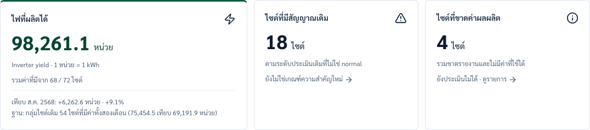
- เลือกเมนูด้านบน: ภาพรวม / ไซต์ทั้งหมด / รายการตรวจสอบ / รายงานและข้อมูล
- เริ่มทุกครั้งด้วย “เดือนรายงาน” และ “ขอบเขตไซต์” แล้วอ่านความครบถ้วนก่อนดูยอด
- รอบงานประจำเดือน: ดาวน์โหลดไฟล์ → นำเข้า → อ่านกราฟ/หลักฐาน → เปิดงาน → แจ้งช่าง → บันทึกผล
02อะไรอัตโนมัติ และอะไรต้องทำเอง?
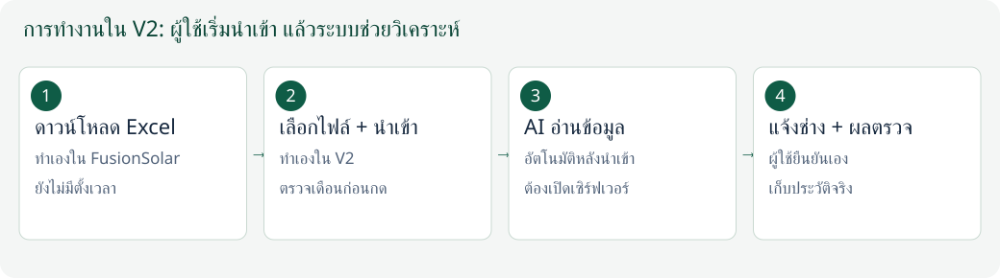
- ดาวน์โหลด Excel: ผู้ใช้เข้า FusionSolar และดาวน์โหลดเอง
- อัปโหลด: เลือกไฟล์ ตรวจเดือน แล้วกดนำเข้าเอง หน้าเว็บยังไม่ดึงไฟล์ตามเวลา
- AI: หลังนำเข้าสำเร็จ ระบบเข้าคิววิเคราะห์ไซต์ในไฟล์อัตโนมัติ หากตั้งค่า key แล้วและเซิร์ฟเวอร์ยังทำงาน
- ส่ง LINE และบันทึกผลตรวจ: ผู้ใช้ทำและยืนยันเอง
03ดาวน์โหลดจาก Huawei FusionSolar
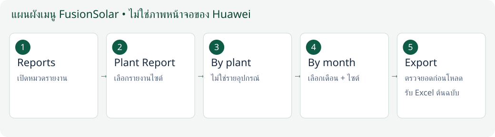
- เปิด intl.fusionsolar.huawei.com แล้วเข้าสู่ระบบด้วยบัญชีที่มีสิทธิ์ดูรายงาน
- ไป Reports → Plant Report → By plant → By month
- เลือกเดือนที่ต้องการ และเลือกทุกไซต์ในขอบเขตที่ต้องการ แล้วค้นหา/แสดงรายงาน
- ตรวจเดือนและยอดจำนวนไซต์บนหน้ารายงานก่อนกด Export เพื่อรับ Excel เก็บต้นฉบับไว้
- ถ้าต้องการหลายเดือน ให้ดาวน์โหลดทีละเดือน ไม่ใช้รายงานรายวันหรือรายอุปกรณ์แทน
04เลือกไฟล์และยืนยันเดือนก่อนนำเข้า
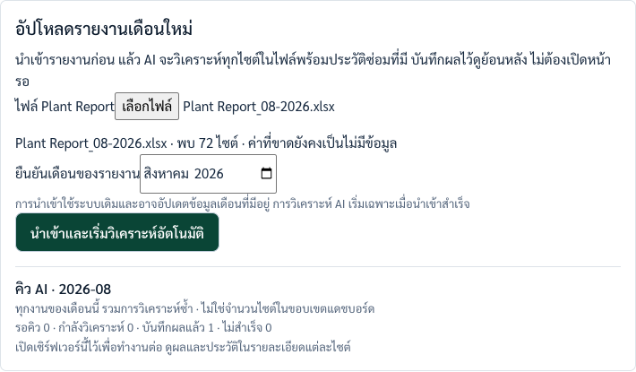
- เปิด “รายงานและข้อมูล” → “อัปโหลดรายงานเดือนใหม่” → เลือกไฟล์ Plant Report (.xlsx/.xls)
- รอระบบอ่านไฟล์ ตรวจชื่อไฟล์และจำนวนไซต์ที่พบ เทียบกับยอดบน FusionSolar ไม่ยึดจำนวนในภาพตัวอย่าง
- ตรวจช่อง “ยืนยันเดือนของรายงาน” ให้ตรงกับไฟล์ แล้วกด “นำเข้าและเริ่มวิเคราะห์อัตโนมัติ”
- รอข้อความนำเข้าสำเร็จ หากนำเข้าแล้วแต่ AI ยังรอ key หรือคิวผิดพลาด ให้ตรวจข้อความนั้นแยกกัน
05อ่านภาพรวมให้ถูกก่อนตัดสินใจ
- เลือกเดือนที่ต้องการดู แล้วเลือกทะเบียนต้นทาง หรือรวมไซต์ในประวัติ
- อ่าน “มีค่าผลผลิต … / … ไซต์” ก่อนดูยอดรวม ยอดรวมอาจยังไม่ครบทุกไซต์
- การ์ด “ไซต์ที่มีสัญญาณเดิม” และ “ไซต์ที่ขาดค่าผลผลิต” กดเพื่อดูรายการได้
- เทียบปีก่อนด้วยกลุ่มไซต์ที่มีค่าทั้งสองช่วง ไม่เอายอดรวมคนละจำนวนไซต์มาอ้างว่าเครื่องดีขึ้นหรือแย่ลง
06กราฟเส้นและแท่งคู่เทียบปีก่อน
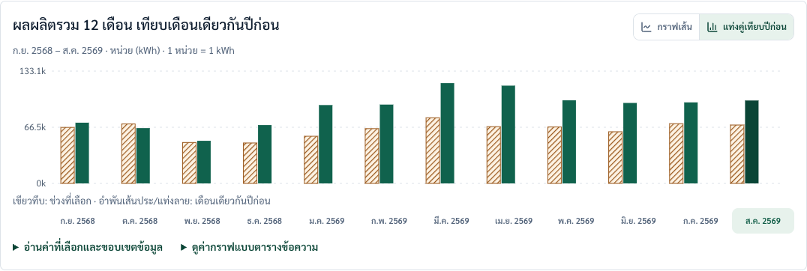
- กด “กราฟเส้น” เพื่อดูแนวโน้ม หรือ “แท่งคู่เทียบปีก่อน” เพื่อดูรายเดือนเป็นคู่
- ในโหมดเส้น เลือก “เทียบเดือนเดียวกันปีก่อน” ได้ เส้นทึบ/แท่งทึบคือช่วงที่เลือก เส้นประ/แท่งลายคือปีก่อน
- กดเดือนใต้กราฟ แล้วเปิด “อ่านค่าที่เลือกและขอบเขตข้อมูล” เพื่ออ่านค่า ในภาพรวมจะเปลี่ยนเดือนของหน้าด้วย
- เปิด “ดูค่ากราฟแบบตารางข้อความ” เมื่ออยากอ่านตัวเลขละเอียดหรือใช้คีย์บอร์ด
07ค้นหาไซต์แล้วเปิดดูหลักฐาน
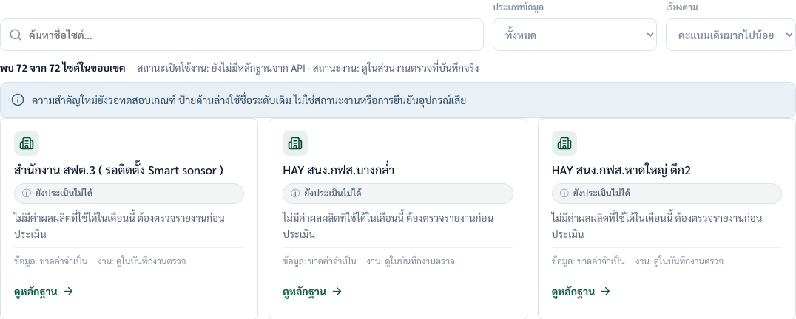
- ไป “ไซต์ทั้งหมด” แล้วพิมพ์ชื่อหรือรหัสในช่องค้นหา เลือกประเภทข้อมูลและลำดับที่ต้องการ
- กด “ดูหลักฐาน” บนการ์ดไซต์ หน้ามือถือใช้การ์ดและมีปุ่มเปลี่ยนหน้า
- รายละเอียดไซต์มีกราฟของไซต์นั้นและแถบเลือกไซต์ กด “Inspection Desk · กลับรายการ” เพื่อกลับพร้อมเดือน/ขอบเขต/คำค้น
- ชื่อไซต์ยาวอ่านได้เต็มโดยขึ้นบรรทัดใหม่ อย่าคิดว่าไซต์หายเพียงเพราะอยู่หน้าถัดไป
08แยกสิ่งที่พบออกจากสาเหตุที่คาดไว้
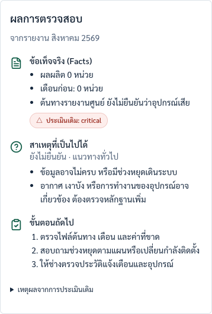
- “ข้อเท็จจริง (Facts)” คือค่าจากรายงานและหลักฐานต้นทาง
- “สาเหตุที่เป็นไปได้” คือแนวทางทั่วไป ยังไม่ใช่ผลตรวจของช่าง
- “ขั้นตอนถัดไป” เริ่มจากความครบของรายงาน ประวัติหยุด แล้วให้ช่างตรวจหน้างานตามความเหมาะสม
- ผลตรวจจริงต้องอยู่ในงานตรวจหรือประวัติซ่อม ไม่คัดลอกข้อเสนอ AI ไปเป็นสาเหตุยืนยันโดยไม่ตรวจ
09เปิดงานตรวจจากหลักฐานเดือนนี้
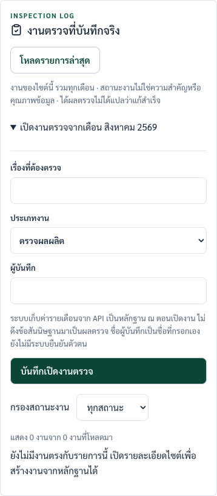
- ในรายละเอียดไซต์ เลื่อนถึง “งานตรวจที่บันทึกจริง” แล้วเปิด “เปิดงานตรวจจากเดือน …”
- กรอกเรื่องที่ต้องตรวจ เลือกประเภทงาน และผู้บันทึก แล้วกด “บันทึกเปิดงานตรวจ”
- ระบบเก็บหลักฐานเดือนต้นทางและตั้งสถานะ “รอตรวจ” หลังบันทึกสำเร็จเท่านั้น
- ถ้ามีงานประเภทเดียวกันที่ยังรอตรวจ/แจ้งแล้ว ให้ใช้เรื่องเดิม ไม่เปิดซ้ำ
10คัดลอกข้อความ แล้วส่ง LINE ด้วยตัวเอง
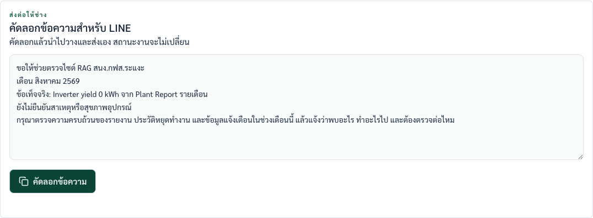
- ในรายละเอียดไซต์ หา “คัดลอกข้อความสำหรับ LINE” แล้วอ่านชื่อไซต์ เดือน และข้อความก่อน
- กด “คัดลอกข้อความ” หรือใช้ Tab แล้ว Enter/Space
- ไป LINE เลือกช่าง/กลุ่มที่ถูกต้อง วางข้อความ และกดส่งเอง
- หลังแจ้งแล้ว กลับมาบันทึก “แจ้งช่างแล้ว” ในงานตรวจแยกอีกขั้น
11ยืนยันว่าแจ้งช่างแล้ว
ภาพตัวอย่างอธิบายฟอร์ม • ไม่ใช่ผลตรวจหรือการบันทึกจริง
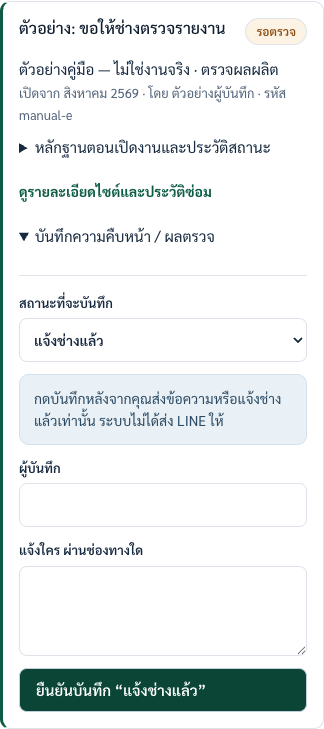
- เปิดงาน → “บันทึกความคืบหน้า / ผลตรวจ”
- เลือกสถานะ “แจ้งช่างแล้ว” กรอกผู้บันทึก และแจ้งใครผ่านช่องทางใด
- กด “ยืนยันบันทึก ‘แจ้งช่างแล้ว’” หลังจากแจ้งจริงแล้ว
- เปิด “หลักฐานตอนเปิดงานและประวัติสถานะ” เพื่อตรวจชื่อ เวลา และหมายเหตุที่บันทึก
12บันทึกผลตรวจ: ช่างพบอะไรและทำอะไร
ภาพตัวอย่างอธิบายฟอร์ม • ไม่ใช่ผลตรวจหรือการบันทึกจริง
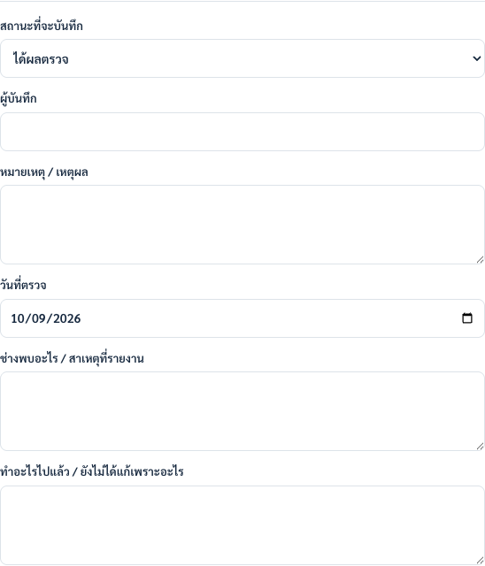
- เปิดความคืบหน้าของงาน แล้วเลือก “ได้ผลตรวจ”
- กรอกผู้บันทึก หมายเหตุ และวันที่ตรวจจริง
- กรอก “ช่างพบอะไร / สาเหตุที่รายงาน” ตามผลจากช่าง ไม่เดาแทน
- กรอก “ทำอะไรไปแล้ว / ยังไม่ได้แก้เพราะอะไร” แล้วเลือกผลหลังดำเนินการในส่วนล่าง
13บันทึกผลหลังแก้ และติดตามต่อ
ภาพตัวอย่างอธิบายฟอร์ม • ไม่ใช่ผลตรวจหรือการบันทึกจริง
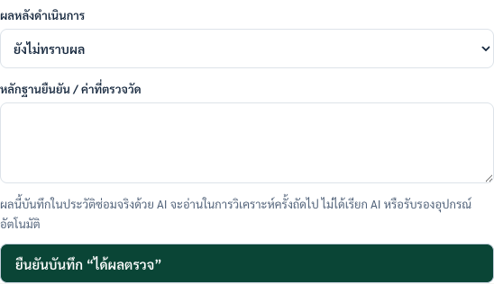
- เลือกผล: ยังไม่ทราบผล / ต้องติดตามต่อ / ช่างแจ้งว่าแก้แล้ว รอยืนยัน / ผู้บันทึกยืนยันผลพร้อมหลักฐาน
- ถ้าเลือกยืนยันผล ต้องกรอกหลักฐาน เช่น ค่าที่วัดและวันที่ตรวจ ไม่ใส่เพียง “ปกติ” โดยไม่มีเหตุผล
- กด “ยืนยันบันทึก ‘ได้ผลตรวจ’” ระบบเก็บประวัติสถานะและประวัติซ่อมพร้อมกัน
- ถ้าต้องตรวจเพิ่ม ใช้ “เปิดติดตามงานเดิมต่อ” เพื่อกลับเป็นรอตรวจ โดยเก็บประวัติเดิมไว้
14บันทึกซ่อมโดยตรง และดูย้อนหลัง
- ในรายละเอียดไซต์ เปิดส่วน ‘ไทม์ไลน์การซ่อม / การดำเนินการ’ เพื่อดูบันทึกจริงรวมทุกเดือน
- หากเป็นการซ่อมที่ไม่ได้เปิดงานตรวจไว้ ให้กด ‘เพิ่มบันทึกซ่อมจริง’ แล้วกรอกวันที่ ประเภท สิ่งที่พบ สิ่งที่ทำ ผล และผู้บันทึก
- กรอกหลักฐานหากยืนยันผล แล้วกดปุ่มบันทึก รอข้อความบันทึกประวัติซ่อมลงระบบแล้ว
- ถ้าบันทึก ‘ได้ผลตรวจ’ ผ่านงานตรวจแล้ว ไม่ต้องกรอกบันทึกซ่อมซ้ำ ระบบเชื่อมให้แล้ว
15ดู AI และประวัติการซ่อม
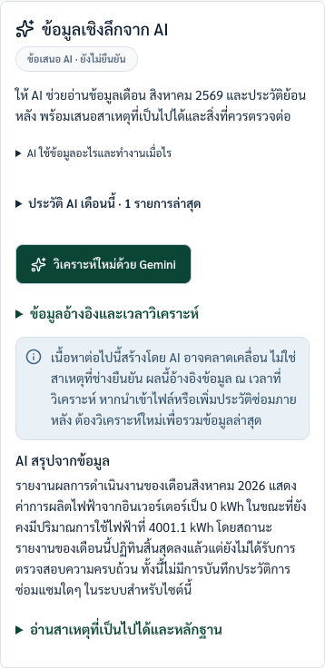
- หลังนำเข้า เปิดรายละเอียดไซต์และเดือนที่ต้องการ เลื่อนถึง “ข้อมูลเชิงลึกจาก AI”
- ถ้ามีผลบันทึกไว้ เปิด “ประวัติ AI เดือนนี้” → “ดูผลครั้งนี้” ตรวจเวลาและหลักฐานของรอบนั้น
- “วิเคราะห์ใหม่ด้วย Gemini” เป็นการเรียกใหม่ อาจมีค่าใช้จ่าย และต้องมี key ฝั่งเซิร์ฟเวอร์
- บันทึกผลตรวจจากงานจะเข้าไปในประวัติซ่อม ให้ AI อ่านครั้งถัดไปตามวันที่ ไม่แก้ผล AI เก่าอัตโนมัติ
16ดูงานข้ามเดือนและแก้ปัญหาเบื้องต้น
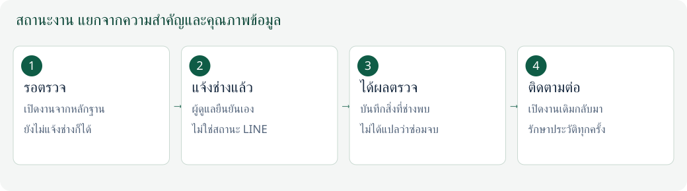
- หน้า “รายการตรวจสอบ” มีงานที่บันทึกจริงทุกไซต์ทุกเดือน แยกจากรายการสัญญาณของเดือนด้านบน ใช้ “กรองสถานะงาน” ได้
- งานของไซต์เดียวดูในรายละเอียดไซต์ได้ ประวัติซ่อมรวมทุกเดือน ไม่ได้หายไปเมื่อเปลี่ยนเดือนรายงาน
- โหลดไม่ได้: กดลองใหม่/โหลดรายการล่าสุด ส่วนบันทึกล้มเหลวให้เก็บข้อความและอ่านสาเหตุก่อน
- AI รอคิว: เปิดเซิร์ฟเวอร์ไว้ ไม่ต้องเปิดหน้าเว็บค้าง AI ไม่สำเร็จไม่ใช่แปลว่านำเข้าไฟล์ล้มเหลว